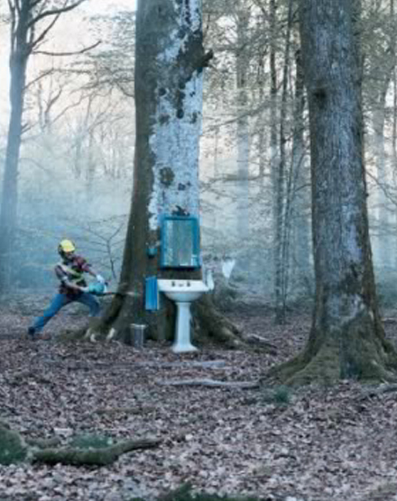
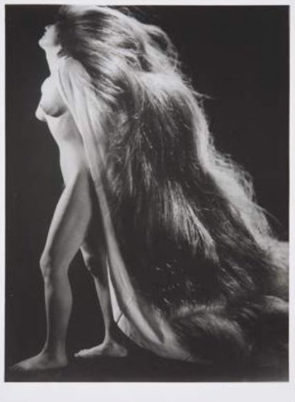
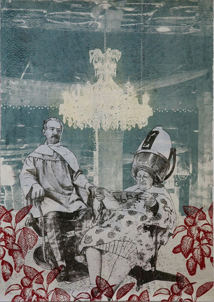

Οι αφορισμοί, τα αποφθέγματα, οι παροιμίες, τα σύντομα ρητά, ακόμα και σε ένα βαθμό τα επιγράμματα, είναι η παλαιότερη λογοτεχνική μορφή – ενσωματωμένη συχνά σε αυτό που αποκαλούμε σήμερα ποίηση. Φέρουν την νοηματική περιεκτικότητα του σλόγκαν με την ικανότητά του να συμπυκνώνονται δυνατές ιδέες σε μερικές μόνο λέξεις. Ο σιωπηλός χαρακτήρας της αλήθειας τους είναι τόσο ισχυρός που τους ξεχνάς αμέσως μόλις τους διαβάσεις.
Οι αφορισμοί απαιτούν από εμάς να αλλάξουμε τον τρόπο που διαβάζουμε και να τους προσεγγίσουμε σε μικρές δόσεις. Καθένας τους είναι μια ολοκληρωμένη μονάδα, μια ολοκληρωμένη αφήγηση διαχωρισμένη από άλλες.
Nassim Taleb
| |
Remember the light and believe the light, an instant of clarity before eternal night.
Θυμηθείτε το φως και πιστέψτε το φως, μια στιγμή σαφήνειας πριν την αιώνια νύχτα.
The Tibetan Book of the Dead (Θιβετανική βιβλος των νεκρών)
| |
Δεν υπάρχουν γεγονότα, παρά μόνο ερμηνείες.
Friedrich Wilhelm Nietzsche
| |

Εάν ένα ποίημα δεν γεννιέται με την ίδια φυσικότητα των φύλλων πάνω στα δέντρα, είναι καλύτερα να μην γεννιέται καθόλου.
John Keats
| |
Εδώ είμαστε, παγιδευμένοι στο κεχριμπάρι της στιγμής.
Δεν υπάρχει γιατί.
Kurt Vonnegut
| |
Η συκοφαντία μπαίνει στο αυτί κάποιου και σκοτώνει κάποιον άλλο.
Σανσκριτική παροιμία
| |
Στην εποχή μας, έχουμε τώρα πια βιβλία για άλλα βιβλία και περιγραφές περιγραφών.
Λίχτενμπέργκ
| |
Η πορεία στη ζωή σου εξαρτάται από την τρυφερότητα σου στους νέους, την συμπόνια σου στους πάσχοντες, την ανεκτικότητά σου σε αδύναμους και δυνατούς.
Τζωρτζ Ουάσινγκτον
| |
Ο δρόμος δίχως τέλος, είναι ο μόνος που αξίζει το ταξίδι.
Γνωμικό των Σούφι
| |

Περί κουρέματος :
Ο συμβολισμός της κόμης, στην αρχαία Ελλάδα αλλά και παγκοσμίως.
Οι πληροφορίες που αντλούμε από τις αρχαίες ελληνικές πηγές είναι αρκετά κατατοπιστικές για την σημασία που έδιναν οι αρχαίοι Έλληνες στην κόμη και στον τρόπο, με τον οποίο την διαχειρίζονταν. Η κοπή των μαλλιών σε ένδειξη πένθους και η αφιέρωσή της στον τάφο του νεκρού αποτελούσε πανελλήνιο έθιμο, καθώς μας πληροφορούν ποιητές όπως ο Όμηρος (Οδυσ. δ: 197, ω: 45, Ιλ. Ψ: 46, 150), ο Αισχύλος (Χοηφόροι: 6) ή ο Ευριπίδης (Φοίνισσες, 322. Ηρακλής Μαινόμενος, 1389-1392. Άλκηστις, 512. Ιππόλυτος, 336).
Την ίδια διάθεση μάλλον προδίδει το αρχαίο έθιμο να κουρεύουν οι χήρες τα μαλλιά τους, συνήθεια που σήμερα έχει αντικατασταθεί από την κάλυψη του κεφαλιού με μαύρο μαντίλι. Προφανώς, στην υποβάθμιση της θηλυκότητας και κατάπνιξη του ερωτισμού αποβλέπει η κάλυψη του κεφαλιού με μαύρο μαντίλι από τις καλόγριες του ορθόδοξου χριστιανικού δόγματος.
Υποκαθιστά ανθρωποθυσία
Ο συμβολισμός της κόμης, στην αρχαία Ελλάδα, καθώς δείχνουν οι εθνογραφικές και ανθρωπολογικές παρατηρήσεις, είχε και έχει χαρακτήρα διαχρονικό και παγκόσμιο. Το κούρεμα ή το ξύρισμα του κεφαλιού ενίοτε ισοδυναμεί με συμβολικό ευνουχισμό, ενώ η τελετουργική κοπή των μαλλιών, ως θυσία μέρους αντί του όλου, υποκαθιστά ανθρωποθυσία. Απεριόριστη σεξουαλικότητα συχνά δηλώνεται με τα μακριά μαλλιά, περιορισμένη με τα μισοξυρισμένα ή σφιχτοδεμένα μαλλιά, ενώ το εντελώς ξυρισμένο κεφάλι είναι ενδεικτικό πλήρους αποχής. Παραδείγματος χάριν, στους ορεσίβιους πληθυσμούς της Βιρμανίας και του Assam τα ανύπαντρα κορίτσια τρέφουν κοντά μαλλιά ή έχουν το κεφάλι εντελώς ξυρισμένο. Αντίθετα οι παντρεμένες γυναίκες έχουν μακριά μαλλιά. Στους Βραχμάνες της Νότιας Ινδίας η τελετουργική κουρά και το ξύρισμα του κεφαλιού αποτελεί το προκαταρκτικό στάδιο, ένα χρόνο περίπου πριν από τη μύηση στα θρησκευτικά καθήκοντα. Από αυτή τη στιγμή και μετά το ξυρισμένο κεφάλι, εκτός από μια τούφα μαλλιά, αποτελεί θρησκευτικό δόγμα και συμβολίζει την πλήρη αποχή από γενετήσιες σχέσεις. Το ίδιο προφανώς σημαίνει το ξύρισμα του κεφαλιού της ινδουίστριας χήρας. Ανάμεσα στους βουδιστές της Κεϋλάνης, μοναχοί και μοναχές παραμένουν άγαμοι και έχουν το κεφάλι ξυρισμένο, ενώ οι διάγοντες κανονική σεξουαλική ζωή διατηρούν μακριά μαλλιά. Ως μέρος της διαβατήριας τελετής από την παιδική ηλικία στην εφηβεία το ξύρισμα ή το μερικό κούρεμα των μαλλιών της κεφαλής έχει παρατηρηθεί επίσης στις φυλές της κάτω κοιλάδας του ποταμού Κογκό στην Αφρική, στους Ινδιάνους της Νότιας Βραζιλίας, μεταξύ των Yuracares της Βολιβίας, καθώς και στην περιοχή του σημερινού Rio de Janeiro.
Έθιμο που επιβιώνει έως τις μέρες μας
Το κόψιμο της κόμης, ως συμβολικός θάνατος, φαίνεται ότι επιβιώνει ως τις μέρες μας σε διάφορες εκδηλώσεις του βίου, δημόσιου και ιδιωτικού. Το ίδιο θα μπορούσε να υποστηριχτεί και για την παλιά συνήθεια να κουρεύονται «εν χρω» οι νεοσύλλεκτοι στρατιώτες, αφού έτσι εκμηδενιζόταν, «πέθαινε» η δυναμική προσωπικότητα του νέου άνδρα και τη θέση της έπαιρνε το υποταγμένο και πειθήνιο άτομο.
Πηγή: Καθημερινή, Χρ. Γ. Ντούμας, 23/5/10
http://news.kathimerini.gr/4dcgi/_w_articles_civ_1_23/05/2010_401686
| |
Η μεταφυσική των αριθμών....
| |
Wine is bottled poetry.
Το κρασί είναι εμφιαλωμένη ποίηση.
Ρόμπερτ Λούις Στήβενσον
| |
Τα κακά θα σας έρθουν από τους διαβασμένους.
Κοσμάς ο Αιτωλός
| |
Ο πόνος της ανικανοποίητης φύσης μας είναι η χειρότερη αρρώστια. Άσχετα με το τι έχεις πάντα θέλεις περισσότερα και καλύτερα. Αυτή η άσβεστη πλεονεξία είναι ένα βάσανο, μια διαρκής φυσική απογοήτευση.
Λάμα Τουμπτέν Γεσέ
| |
Απαιτείται μεγάλη ιδιοφυία και αυτοπεποίθηση για να αποδεχτείς ότι αυτό που βγάζει νόημα, στην πραγματικότητα δεν βγάζει νόημα.
Nassim Taleb
| |
Ποτέ δεν επέτρεψα την κρατική εκπαίδευση να εμποδίζει την μόρφωσή μου.
Μαρκ Τουέην
| |
Μυθιστόρημα χωρίς έρωτα είναι σαν λουκάνικο χωρίς μουστάρδα
Ανατόλ Φρανς
| |
Τρισκατάρατον είναι το πλοίον το έχον κατάρτια και στα τρία ιστία.
| |
Παρεμπιπτόντως, επί του παρόντος όντος, διεπιστώθη πονόδοντος, και διετάχθη κατεπειγόντως, η εξαγωγή του οδόντος.
| |
Στην Αυστραλία το καλοκαίρι του 2008/2009, ένα εξαιρετικά όμορφο φαινόμενο φώτισε τις λίμνες Gippsland και δημιούργησε ένα θέαμα που όσοι βρέθηκαν εκεί δεν θα το ξεχάσουν ποτέ. Μια ασυνήθιστα υψηλή συγκέντρωση των Noctiluca scintillans, ένας βιοφωτοβόλος μικροοργανισμός, δημιούργησε ένα φωτεινό, λαμπερό, αιθέρια μπλε νερό. Ο Φωτογράφος Phil Hart ήταν εκεί και αποτύπωσε την μαγική εικόνα.
In the Australian summer of 2008/2009, a hauntingly beautiful phenomenon illuminated the Gippsland Lakes and created scenes that those present will never forget. An unusually high concentration of Noctiluca scintillans, a bioluminescent microorganism, turned the water a bright, glowing, ethereal blue. Photographer Phil Hart was there to document the amazing display.
| |
Η αφέλεια είναι εμπιστοσύνη της αθώας καρδιάς.
Π. Μπουάστ
| |

Για να θεραπευτείτε πλήρως από τα ζώδια, περάστε ένα χρόνο διαβάζοντας τις προβλέψεις της προηγούμενης εβδομάδας.
Nassim Taleb
| |
Είμαστε σαφώς ευφυέστεροι όταν δεν πιέζουμε τον εαυτό μας – κάτι που το ανακαλύπτουν όλοι την ώρα που κάνουν ντους.
Nassim Taleb
| |
Τι διάολο κάνανε στο φεγγάρι με ένα όχημα; Είστε ήδη στο φεγγάρι! Δεν είναι αρκετά μακριά αυτό;
Jerry Seinfeld
| |
Τώρα στο μικρό σαλόνι, δεν μένει παρά αυτό που μένει όταν δεν μένει τίποτα : οι μύγες, ας πούμε, ή τα διαφημιστικά φυλλάδια που πετούν οι φοιτητές κάτω από τις πόρτες όλων των διαμερισμάτων και διατυμπανίζουν μια καινούργια οδοντόπαστα ή μια έκπτωση 25 σεντς σε κάθε αγοραστή τριών απορρυπαντικών ή παλιά τεύχη του περιοδικού που η συνδρομή εξακολουθούσε να ισχύει για λίγους μήνες μετά το θάνατό του.
Ζώρζ Περέκ
| |
Μan differs from the animals only by the greater complexity of his reactions to external impressions, and by having a more complex construction for perceiving and reacting to them.
Ο άνθρωπος διαφέρει από τα ζώα μόνο γιατί έχει μεγαλύτερη πολυπλοκότητα στις αντιδράσεις του σε εξωτερικά ερεθίσματα, και έχοντας μια πιο σύνθετη δομή για να αντιλαμβάνεται και να αντιδρά σε αυτά.
G. I. Gurdjieff
| |

Αφού σου αρέσει η άβυσσος, πρέπει να έχεις φτερά.
Friedrich Nietzsche
| |
Η ηδονή που τον κυριεύει απαιτεί σκοτάδι. Αυτό το σκοτάδι είναι καθαρό, απόλυτο, χωρίς εικόνες ή οράματα, αυτό το σκοτάδι δεν έχει τέλος, δεν έχει σύνορα, αυτό το σκοτάδι είναι το άπειρο που ο καθένας μας κουβαλάει μαζί του ( ναι, όποιος αναζητάει το άπειρο δεν έχει παρά να κλείσει τα μάτια! )
Milan Kundera
| |
Το κείμενο της γενικής συνέλευσης των καταληψιών της wall street στη Νέα Υόρκη.
As we gather together in solidarity to express a feeling of mass injustice, we must not lose sight of what brought us together. We write so that all people who feel wronged by the corporate forces of the world can know that we are your allies. As one people, united, we acknowledge the reality: that the future of the human race requires the cooperation of its members; that our system must protect our rights, and upon corruption of that system, it is up to the individuals to protect their own rights, and those of their neighbors; that a democratic government derives its just power from the people, but corporations do not seek consent to extract wealth from the people and the Earth; and that no true democracy is attainable when the process is determined by economic power. We come to you at a time when corporations, which place profit over people, self-interest over justice, and oppression over equality, run our governments. We have peaceably assembled here, as is our right, to let these facts be known. They have taken our houses through an illegal foreclosure process, despite not having the original mortgage. They have taken bailouts from taxpayers with impunity, and continue to give Executives exorbitant bonuses. They have perpetuated inequality and discrimination in the workplace based on age, the color of one’s skin, sex, gender identity and sexual orientation. They have poisoned the food supply through negligence, and undermined the farming system through monopolization. They have profited off of the torture, confinement, and cruel treatment of countless animals, and actively hide these practices. They have continuously sought to strip employees of the right to negotiate for better pay and safer working conditions. They have held students hostage with tens of thousands of dollars of debt on education, which is itself a human right. They have consistently outsourced labor and used that outsourcing as leverage to cut workers’ healthcare and pay. They have influenced the courts to achieve the same rights as people, with none of the culpability or responsibility. They have spent millions of dollars on legal teams that look for ways to get them out of contracts in regards to health insurance. They have sold our privacy as a commodity. They have used the military and police force to prevent freedom of the press. They have deliberately declined to recall faulty products endangering lives in pursuit of profit. They determine economic policy, despite the catastrophic failures their policies have produced and continue to produce. They have donated large sums of money to politicians, who are responsible for regulating them. They continue to block alternate forms of energy to keep us dependent on oil. They continue to block generic forms of medicine that could save people’s lives or provide relief in order to protect investments that have already turned a substantial profit. They have purposely covered up oil spills, accidents, faulty bookkeeping, and inactive ingredients in pursuit of profit. They purposefully keep people misinformed and fearful through their control of the media. They have accepted private contracts to murder prisoners even when presented with serious doubts about their guilt. They have perpetuated colonialism at home and abroad. They have participated in the torture and murder of innocent civilians overseas. They continue to create weapons of mass destruction in order to receive government contracts. * To the people of the world, We, the New York City General Assembly occupying Wall Street in Liberty Square, urge you to assert your power. Exercise your right to peaceably assemble; occupy public space; create a process to address the problems we face, and generate solutions accessible to everyone. To all communities that take action and form groups in the spirit of direct democracy, we offer support, documentation, and all of the resources at our disposal. Join us and make your voices heard! *These grievances are not all-inclusive.
15/10 Lost Bodies Live στο Σύνταγμα.
www.15october.net
| |
Ήταν τότε που ο χρόνος δεν είχε ακόμα γενειάδα.
Λίχτενμπέργκ
| |
– Πες μου ένα χαρούμενο τραγούδι για την ζωή, είπε το δέντρο στ' αστέρι του.
– Το τραγούδι που λέει η καγκελόπορτα, όταν ανοίγει και μπαίνει κάποιος που αγαπάς.
Αλκυόνη Παπαδάκη
| |
Ο έξυπνος θα καταλάβει αν του κάνεις νεύμα, ο βλάκας αν τον σπρώχνεις.
Αραβική παροιμία
| |
Η ανεκτικότητα είναι περιττή πολυτέλεια όταν ο κίνδυνος γίνει μεγάλος.
Κάρλ Πόπερ
| |
Όταν οι αντίπαλοί σου κάθονται εκεί πέρα κρατώντας όλους τους άσους, ένα πράγμα σου μένει να κάνεις: να δώσεις μια κλωτσιά και να αναποδογυρίσεις το τραπέζι.
| |
I have scars on my hands from touching certain people.
Έχω ακόμα τα σημάδια στα χέρια μου από την επαφή μου με κάποιους ανθρώπους.
J.D. Salinger
| |
Ηγέτης είναι αυτός που έχει ανάγκη τους άλλους.
Paul Valéry
| |

Όποιος μπορεί ενεργεί. Όποιος δεν μπορεί, διδάσκει. Όποιος δεν μπορεί να διδάξει, διδάσκει τους δασκάλους.
Μπάροου
| |
Η αλληλογραφία είναι ο μοναδικός τρόπος να συνδυάζεις τη μοναξιά με την καλή παρέα.
Λόρδος Μπάϋρον
| |
Μια υγεία μεταδοτική.
Λίχτενμπέργκ
| |
Nobody Kicks Ass Without Tanker Gas
| |
Για να γίνεις φιλόσοφος, ξεκίνα περπατώντας πολύ αργά.
Nassim Taleb
| |
Δεν είναι ανάγκη να καταφεύγουμε στην ομαλότητα για να πετύχουμε την αισθητική απλότητα.
Nassim Taleb
| |
Τη φωτιά μπορείς να καταπολεμήσεις, τον καπνό όχι.
| |
Ο ποιητής είναι ο αδερφός που μιλάει σ’ έναν άλλο αδερφό για «μια στιγμή της άλλης τους ζωής», μια στιγμή που είχε θαφτεί κάτω απ’ την σκόνη ενός πολυάσχολου κόσμου.
Edith Sitwell Lionel Trilling
| |
Δεν έχω τίποτα να κάνω και το κάνω.
| |
Οι εκρήξεις ενός πινέλου πολύ ρυπαρού.
Λίχτενμπέργκ
| |
Οι νέοι είναι χαρούμενοι, γιατί έχουν την ικανότητα να βλέπουν την Ομορφιά.
Φράντς Κάφκα
| |
Έλεγα στον εαυτό μου : «Αυτό είναι αδύνατον να το πιστέψω!», και, την ίδια ώρα που το έλεγα, διαπίστωνα ότι το πίστευα για δεύτερη φορά.
Λίχτενμπέργκ
| |
Nothing stinks like a pile of unpublished writing.
Τίποτα δεν βρωμάει χειρότερα από ένα σωρό αδημοσίευτα γραπτά.
Sylvia Plath
| |
Ακόμα και το φως στον εαυτό του χάνεται.
Οκτάβιο Πας
| |
Ξέρω μαριονέτες που αντί για σχοινιά κρέμονται από αλυσίδες.
Stanislaw Jerzy Lec
| |
Όλο στο κερατάδικο τον βλέπω.
Φράση που λέγεται από καχυποψία για κάποιον κατάδικο που συχνάζει στη γραμματεία της φυλακής. Η λέξη κερατάδικο δηλώνει το αστυνομικό τμήμα.
Ηλίας Πετρόπουλος. Παροιμίες του υποκόσμου
| |
Ο κάθε ένας μας τρώει περίπου χίλια γεύματα το χρόνο, θα έπρεπε να προσπαθούμε να κάνουμε όσον δυνατόν περισσότερα από αυτά αξέχαστα.
Ρ.Κάριερ
| |
Οι άνθρωποι ζουν πια περισσότερα χρόνια, εξέλιξη που κρίθηκε απαραίτητη για την αποπληρωμή των 30 ετών στεγαστικών δανείων.
Νταγκ Λάρσον
| |
Συχνά το απλό είναι και το πιο σοφό.
Ουγκώ
| |
Οι καλόγριες δεν έδωσαν μόνο τον αυστηρό όρκο αγνότητας, έβαλαν και χοντρά κάγκελα στα παράθυρά τους.
Λίχτενμπέργκ
| |
Είναι μεγάλη ηλιθιότητα να πιστεύεις ότι θεραπεύεις την απληστία και την τσιγκουνιά με το χρήμα, τους εθισμούς με τις ουσίες, και τις κρίσεις χρέους με δάνεια.
Nassim Taleb
| |
Πήγα σε ένα συνέδριο ευτυχίας. Οι ερευνητές φαίνονταν πολύ δυστυχισμένοι.
Nassim Taleb
| |
Το μαρτύριο είναι ο πιο σίγουρος τρόπος για να βρεις την αλήθεια.
Φ. Νίτσε
| |

Για όλα πρέπει να διατηρήσουμε το μέτρο, ακόμη και στη σεμνότητα.
Α. Φρανς
| |
Η πολλές επιθυμίες φέρνουν πολλές απογοητεύσεις.
Βεγγάλικη παροιμία
| |
Στην ηλικία μου, τα λουλούδια με τρομάζουν.
George Burns
| |
Η Ελευθερία που δόθηκε στον διεφθαρμένο λαό είναι παρθένα που δόθηκε στους ακόλαστους.
Ο. ντε Μπαλζάκ
| |
Βάλσαμο νά’μουν στον άρρωστο και στον αποσταμένο. Γιατρός τους νά’μουν και θεραπευτής, μέχρι το κακό να φύγει. Τον πόνο να σβήσω ας μπορούσα, της πείνας και της δίψας, με ποτάμια καλούδια και ποτά. Φανάρι στα σκοτάδια και στρώμα για τον άγρυπνο να γίνω, σκλάβος σάυτόν που την ανάγκη μου έχει.
Σαντιντέβα Ινδία
| |
Η επόμενη είδηση διευκρίνιζε ότι οι άνδρες του σταθμού Χωροφυλακής στους Τοξότες στάθηκε αδύνατο να καταλάβουν, αν τα όσα κατάθεσε η υψηλή αρχόντισσα αφορούσαν άνθρωπο ή φίδι, που κρεμασμένο από ένα κλαδί, μαύλισε με τα μεγάλα σαν τάλιρα μάτια του το αθώο πλάσμα, βγάνοντας τη μακριά διχαλωτή του γλώσσα ή απλώς ένα γαυραντισμένο, βαρβάτο γάιδαρο, που διάλεξε αστόχαστα.
Νίκος Γαβριήλ Πεντζίκης
| |
Σαράντα πέντε Γιάννηδες, ενός κοκόρου κλώσα.
| |
Συμβουλεύτηκα το λεξικό των ύβρεων και δεν βρήκα την ευπρεπή αραβική βρισιά : σκατά στα γένια σου.
Λίχτενμπέργκ
| |
|
35 readers online
|